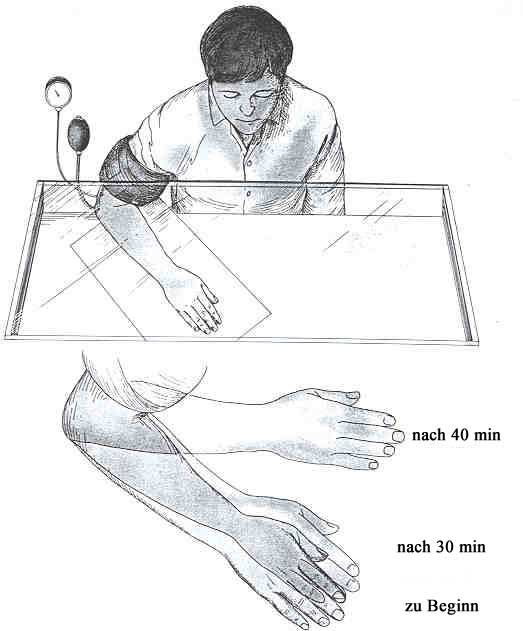

Zurück zur Franz Bardon Forschung
Eine fortgeschrittene Technik Bardons wird von der modernen Wissenschaft bestätigt.
Jeder kann ohne
"magisches" Training jederzeit eine fortgeschrittene Technik Bardons
an sich selbst ausprobieren und damit bestätigen.
©
Paul
Allen, (Neufassung) Juli 2002.
Franz
Bardon Research (English)
Franz
Bardon Forschung (deutsch)
Ich habe erfahren, dass sich skrupellose Geschäftemacher der Forschungsergebnisse (wie zum Beispiel dieser Methode, die dazu besonders gut geeignet scheint), die ich auf meine Franz Bardon Forschungs Homepage stelle, bedienen, um auf Seminaren unbedarfte Seminarteilnehmer mit diesen Methoden und Informationen zu beeindrucken, um sich als große Lehrmeister darzustellen und um meiner Meinung nach überhöhte Seminargebühren rechtzufertigen. Ich möchte eindringlich darauf hinweisen, dass ich dieses Vorgehen für moralisch verwerflich halte. Gleichzeitig ist mir klar, dass meine Mahnung hier diese Vorgänge leider nicht abstellen wird. Weiters muß ich darauf hinweisen, dass diese unerwünschte Auswirkung meiner Arbeit keinerlei Einfluss auf die Veröffentlichung weiterer Ergebnisse haben kann.
"Normale" Menschen (also solche, die sich nicht zufälligerweise für Esoterik interessieren), werden in den meisten Fällen, falls sie mit den Werken Bardons in Berührung kommen, den Inhalt als völlig frei erfunden, dumm und als nicht glaubwürdig beurteilen. Abgesehen davon, dass eine kleine Zahl von "veränderten Bewußtseinszuständen" heute von der Wissenschaft anerkannt werden, wie zum Beispiel Hypnose, Klarträumen, Katalepsie und einige andere, so werden doch die meisten Beschreibungen Bardons von den heutigen Vertretern der anerkannten Wissenschaft als völlig frei erfunden, zurückgewiesen.
Allerdings existiert ein weiterer Beweis, dass Bardons System nicht nur frei erfunden, ein Produkt der Fantasie ist, sondern dass es sich wirklich um eine Zusammenstellung zahlreicher Methoden und Anleitungen handeln könnte, mit deren Hilfe man "exotische" und bisher von der Wissenschaft wenig verstanden Fähigkeiten erwerben kann.
Ich beschreibe hier die Ergebnisse einiger Wissenschaftler die bestätigen, dass es sich bei einer fortgeschrittenen Technik, die von Bardon in seinem ersten Buch beschrieben wird, um ein wirklich vorhandenes Phänomen handelt.
Überraschend ist der Umstand, dass jeder Leser dieses Phänomen sofort an sich selbst hervorrufen, damit experimentieren und somit für sich selbst bestätigen kann, es ist keinerlei "okkultes" Training dazu notwendig. Alles was man dazu benötigt ist die aufblasbare Manschette eines gewöhnlichen Blutdruckmessgeräts.
Das Erzeugen eines "mentalisch freien Raumes".
Franz Bardon beschreibt in seinem Grundkurs "Der Weg zum wahren Adepten", Stufe 5, "magische Körper Schulung", eine Technik zum "bewußten passiven Verkehr mit den Unsichtbaren". Dazu werden in einer Vorübung mit Hilfe von "Lebenskraft", später "Luftelementstauung", "Levitationsübungen" der Hand durchgeführt. In einem 2. Schritt lernt der Schüler dann, einen sogenannten "mentalisch freien Raum" zu schaffen, indem er seine mentale Hand+Arm aus dem "grobstofflichen" herauszieht und die mentale Hand+Arm neben der "grobstofflichen" hinlegt oder durch die Tischplatte hindurch auf seine Beine gleiten läßt. (Der Schüler sitzt dazu auf einem Stuhl vor einem Tisch.) Bardon fährt fort: "Die vorgestellte geistige Hand müssen Sie als Ihre wahre Hand betrachten. In der fleischlichen Hand entsteht ein mentalisch freier Raum, der die Form der äußeren Hand hat."
Viele Wissenschaftler und die meisten Menschen werden solche Beschreibungen als unglaubwürdig, als weit hergeholt beurteilen und können damit nicht verstehen, wie jemand so naiv sein kann, so einen unglaublichen Unsinn als möglich zu bezeichnen. Aber auch ein Schüler, der nach Bardon arbeitet und der schon in der Lage war, einige der von Bardon beschriebenen Techniken zu meistern, wird sich oft nur mit Mühe vorstellen können, daß diese Übung wirklich durchführbar ist.
Umso mehr wird die Mehrzahl der Leser darüber erstaunt sein, dass genau diese Technik auch ganz ohne "magisches" Training von jedem Menschen ganz leicht durchführbar ist. Ob man mit Hilfe dieser Methode dann wirklich in der Lage ist, mit "Geistern" oder "verstorbenen Seelen" Verbindung aufzunehmen, muß jeder für sich selbst entscheiden. Bardons Methoden, oder zumindest diese Methode von Bardon ist, nicht einfach nur eine frei erfundene Geschichte, sondern es handelt sich um wirklich durchführbare Anleitungen.
Phantom-Glieder, heutiger Forschungsstand.
Damit sich der Leser ein genaues Bild von der Funktion der im Folgenden vorgestellten Methode machen kann, muss hier zunächst das Phänomen der Phantom-Glieder besprochen werden. Ich werde deshalb kurz den heutigen Forschungsstand auf diesem Gebiet zusammenfassen.
Wenn ein Mensch durch Amputation, durch einen Unfall, usw. ein Körperglied verliert, dann kommt es sehr oft vor, dass der Patient in der Folge sehr starke Schmerzen in den Regionen, wo sich vorher der Körperteil befand, bekommt. Das ist ein eigenartiges Phänomen: wie ist es möglich, dass man an Stellen Schmerz empfindet, wo sich eigentlich gar nichts mehr befindet ?
Dieses Phänomen wurde zuerst im Jahre 1866 von S. Weir Mitchel, dem damals führenden amerikanischen Neurologen, in seinem ersten Artikel über Phantomglieder, beschrieben. Er beschreibt den Fall eines Mannes, der zuerst durch Amputation einen seiner Arme und dann auch (zuerst noch von ihm selbst unbemerkt) beide seiner Füße während des [amerikanischen] Bürgerkrieges verliert.
"Ich bekam plötzlich einen starken Krampf in meinem linken Fuß. Ich versuchte ihn mit meinem verbliebenen Arm zu erreichen, da ich aber zu schwach war, rief ich einen Pfleger herbei und bat ihn: "Bitte reiben sie meine linke Wade ..." "Wade? Du hast keine mehr, Kollege. Man hat sie amputiert."
Ronald Melzack weist in seinem Artikel "Phantom limbs" [Phantom-Glieder] (Scientific American, April 1992), darauf hin, dass: "In der Tat das Phänomen von Phantomglieder häufig vorkommt. Und genauso sind es auch die oft schrecklichen Schmerzen in diesen unsichtbaren Anhängseln." Und er fährt fort: "Das außergewöhnlichste Merkmal dieser Phantomglieder ist, wie wirklich sie dem Amputierten erscheinen. Die lebhaften Sinneseindrücke und die präzise Lokalisation im Raum lassen zunächst diese Glieder so wirklichkeitsgetreu erscheinen, dass ein Patient versucht, auf einem Phantom-Fuß aus dem Bett zu steigen oder eine Tasse mit einer Phantom-Hand aufzuheben. Das Phantom scheint in der Tat noch substantieller zu sein, als ein wirkliches Körperglied." Und: "Die Realität des Phantoms wird zudem durch das Tragen eines künstlichen Beines oder Arms verstärkt; das Phantom füllt die Prothese dann so aus, wie eine Hand den Handschuh.
Bekannt ist die frühere Annahme, dass die Gefühle von Phantom-Gliedern durch die noch vorhandenen Nerven im Stumpf hervorgerufen werden, die noch weiterhin Nervenimpulse an das Gehirn senden, das diese als von dem früheren Körperteil kommend interpretiert und auf diese Weise den falschen Eindruck eines Phantom-Glieds erzeugt. Dieser Erklärungsversuch ist heute veraltet und wurde durch die Forschung der letzten Jahrzehnte widerlegt. Um die unerträglichen Schmerzen zu lindern wurden die entsprechenden Nerven im Rückenmark durchtrennt und sogar die Bereiche des Thalamus und der Hirnrinde, die aus den entsprechenden Körperregionen Nervenimpulse empfangen, entfernt. Durch keine dieser Maßnahmen konnten die Phantomglieder zum Verschwinden gebracht werden.
"Jede Erklärung [Modell] muß die große Mannigfaltigkeit der Sinneseindrücke, die eine Person fühlen kann, und die lebhafte Realität der Phantome berücksichtigen." erklärt Melzack. "Das Gefühl der Realität wird durch die vielen verschiedenen Sinneseindrücke, die ein Phantom-Glied haben kann noch verstärkt. Druck, Wärme, Kälte ..." "Phantomglieder können sich nass anfühlen (wenn man sieht wie zum Beispiel ein künstliche Fuß in eine Schüssel eintaucht)." "Schließlich wird die Realität noch weiter durch das überraschendes Merkmal von Phantomen gesteigert, dass sie den Eindruck ein Teil von einem selbst zu sein, erwecken. Das bedeutet, Patienten erleben diese so als ob sie ein integraler Teil des eigenen Körpers wären. Ein Phantom-Fuß wird nicht nur als real beschrieben sondern auch als unbestreitbar zum eigenen Körper gehörend."
Melzack schlägt ein solches Modell vor, das den erwähnten Merkmalen von Phantom-Gliedern Rechnung trägt und er sagt über sein Modell: "..., aber es muß natürlich noch weiter getestet werden, bis sein Wert ganz abgeschätzt werden kann." Er postuliert im Grunde in seinem Modell, dass das Gehirn eine Neuromatrix = ein Netzwerk von Neuronen enthält, das den ganzen Körper, in Abstimmung mit den eintreffenden Sinnesdaten, künstlich nachbildet, modelliert. Er nennt diese Neuromatrix, dieses Muster, die Neurosignatur. Melzack beschreibt verschiedene Lagen von Ebenen oder Systemen, die diese Neurosignatur enthalten muß und auch ihre Entsprechungen im Zentralnervensystem (Hirn). Für weitere Details lesen Sie bitte den originalen Artikel. Er führt weiterhin aus, dass wenn diejenigen Bereiche des Hirns, die für die Neurosignatur zuständig sind, beschädigt werden, dann kann es vorkommen, dass Patienten "einen von ihren Füßen aus dem Krankenbett hinausschieben, weil sie meinten, dass der Fuß zu jemand anderem gehört."
Der wichtigste Punkt ist meiner Meinung Melzacks Annahme, dass dieses, durch die Neuromatrix repräsentierte Körperschema, ganz eigenständig arbeitet aber dauernd durch die Signale von den Sinnesorganen aus den verschiedenen Körperregionen auf den neuesten Stand gebracht wird. Deshalb wird auch, wenn wir die Nervenimpulse, die von den peripheren Sinnesorganen kommen, irgendwie unterbrechen, sich dieses neuronale Netzwerk selbstständig machen und wird den Eindruck eines weiteren, neben dem "wirklichen" Körper bestehenden, 2. Körpers erzeugen. Wir können also von zwei Systemen sprechen:
1. Unser Körper und die Systeme der Sinnesorgane, die uns mit der "wirklichen" (realen äußeren) Umwelt verbinden. Und: 2. Das künstliche Körperschema das im Gehirn von der Neuromatrix = Neurosignatur erzeugt wird. In einer Analogie zur Computerwissenschaft könnte man also sagen, das Körperschema ist ein Teil der 'Software' im Gehirn, also ein Programm das abläuft, im Unterschied zur Peripherie der 'Hardware', also unserem konkreten materiellen Körper. Ein Software-Programm kann auch unabhängig von der Peripherie aktiv sein. Ein Bild kann im Photoshop entweder von einem Hardware Peripherie Gerät kommend bearbeitet werden, z.B. scanner oder Videokamera (in unserem Beispiel der Nervenimpuls vom Körperteil), man kann aber mit Hilfe des Zeichenprogramms auch direkt intern ohne Peripheriegeräte eine ganz neues Bild oder Zeichnung herstellen.
(Vergleiche dieser Art 'hinken' natürlich immer etwas.)Solange wir ein "gewöhnliches" Leben führen und nichts außergewöhnliches geschieht, kann man den Unterschied dieser beiden Systeme nicht bemerken. Erst wenn das eine System vom zweiten irgedwie abgekoppelt wird, bermerkt man plötzlich das eigenständige Arbeiten des zweiten Systems.
Das ist zum Beispiel der Fall, wie wir oben gesehen haben, wenn die Verbindung durch die Nervenfasern zwischen der Peripherie und dem Gehirn unterbrochen wird. Aber das ist nur eine Möglichkeit: die Nerven können durch ein Trauma abgetrennt werden (z.B. bei einem Tennisunfall mit Muskel/Nervenriss), oder sie können durch einen Virus zerstört werden, wie es bei Polio (der Kinderlähmung) der Fall ist oder sie können auch durch ein lokales Anästhetikum betäubt werden. Die stärkste "Unterbrechung" ist natürlich eine solche, wenn die entsprechenden Nerven eines Körperteils nie existiert haben.
Die Wissenschaftler sind sich noch nicht einig, auf welche Weise die Neuromatrix gebildet wird. Melzack schreibt: "Ich bin allerdings der von Hebb unterschiedlichen Auffassung, dass ich mir die Entstehung der Verbindungen in der Neuromatrix nicht als durch die Umwelt, sondern hauptsächlich als genetisch bedingt vorstelle." Und: "Ich denke, die Matrix ist zum größten Teil vorverdrahtet, und zwar aus dem einfachen Grund, weil meine Kollegen und ich viele Menschen kennen gelernt haben, die schon mit dem Fehlen eines Fußes oder Armes geboren wurden und trotzdem lebhafte Phantome erleben. Zum Beispiel, ein intelligenter und ernster acht Jahre alter Junge, der mit gelähmten Beinen und einem Arm, der am Ellebogen endet, zur Welt kam, erzählte uns, dass wenn er seinen Ellebogen in eine schmale Hülse steckt um mit Hilfe eines Hebels den Rollstuhl anzusteuern, wachsen Phantom-Finger "wie die Finger eines jeden anderen" aus seinem Ellebogen heraus und greifen nach den Rändern der Hülse.
Bei bestimmten kleineren Eingriffen an z.B. einem Arm wird dieser nur örtlich betäubt und dann die entsprechende Operation durchgeführt, wobei der Arm allerdings durch einen kleinen Sichtschirm verdeckt wird, damit der Patient, der ja bei Bewußtsein ist, nicht durch die Arbeit des Chirurgen an der offenen Wunde unnötigerweise beunruhigt wird. Der Patient kann seinen betäubten Arm also nicht sehen. Und nun kommt es zu einem erstaunlichen Phänomen. Wenn der Eingriff länger als eine halbe Stunde dauert, dann berichten Patienten immer wieder davon, dass sich der vorher ruhig daliegende Arm aufgerichtet hätte, nach unten zum Boden hängen würde oder sich weit zur Seite hin verschoben hätte. Der Patient äußert dann seine Bedenken ob die Betäubung nicht mehr wirken würde, obwohl er keinen Schmerz verspürt, und ob man in dieser Stellung seinen Arms überhaupt richtig operieren könne bzw. was denn plötzlich los sei. Der Chirurg wird dem Patienten dann beruhigend versichern, dass sich sein Arm keineswegs bewegt hätte und ganz ruhig auf dem OP-Tisch liegt und dass die Operation vollkommen normal verlaufe.
In Wirklichkeit hat sich nur das Körperschema des Arms durch die Betäubung selbstständig gemacht, und da auch durch die Augen nicht festgestellt werden konnte, wie die genaue Lage des materiellen Arms ist, macht sich der virtuelle Arm des Körperschemas selbstständig und nimmt eine andere Stellung ein. Dieses Phänomen machen wir uns zunutze, um etwas mit dem virtuellen Arm zu experimentieren.
Die "Hand-Exteriorisations-Technik".
Wir werden für unseren Versuch natürlich keine Anästhetika verwenden, die nur in die Hand des ausgebildeten Mediziners gehören und nur für die vorgesehenen Anwendungen zu verwenden sind.
Von den Forschern dieses Fachgebiets wurde eine ganz einfache Methodik entwickelt, die den gleichen Effekt erzielt.
Dazu benötigt man ein sogenanntes Blutdruckmessgerät, bzw. eigentlich nur die 'Manschette' eines solchen. Jeder kennt diese aufblasbaren Manschetten, die um den Oberarm gewickelt und dann mit Luft aufgeblasen werden, bis der Arm und damit die Hauptvenen etwas abgeschnürt sind, und somit der Blutabfluß aus dem Arm etwas unterbunden wird. (Es existieren kleinere Venen, die nicht abgeschnürt werden und damit eine ausreichende Blutzirkulation im Arm ermöglichen).
Durch diese Maßnahme kommt es zu einem Funktionsverlust der Nerven des Arms und somit zu einer vorübergehenden Betäubung dieser Nerven. Der gleiche Effekt wird sonst als das sogenannte 'Einschlafen' eines Körperteils bezeichnet.
Man setzt sich also an einen Tisch, legt sich die Manschette an, bläst sie wie sonst üblich zum Blutdruck messen auf und wartet ab. Weiters muß für die ersten Versuche der Arm irgendwie verdeckt werden, da sonst das Gehirn über die Augen feststellen kann, wo sich der grobstoffliche Arm gerade befindet, was unser Experiment stören oder behindern würde. Dazu kann man z.B. einen Karton oder eine Stück Stoff verwenden, den bzw. das man über den Arm stülpt.

Man kann auf dieser Zeichnung sehen, wie der virtuelle Arm beginnt, sich vom realen zu lösen. Nach 30 Minuten beginnt sich der virtuelle Arm schon ein wenig zu bewegen, 10 Minuten später hat er sich schon ein ganzes Stück vom "wirklichen Arm" wegbewegt.
Nach einiger Übung mit dieser Methode ist es nicht mehr notwendig den Arm zu bedecken. Sobald der Arm beginnt taub zu werden kann man ihn ganz nach Belieben umherbewegen. Sie konnten ihn bewegen, drehen, heben, senken usw. als ob es sich um ihren wirklichen Arm handeln würde.
Sie können den Arm auch "durch die Tischplatte" hindurchgleiten lassen und auf ihren Oberschenkel legen, sie können versuchen ihre "reale" Nase zu berühren, und eine Reihe amüsanter Versuche durchführen. Können Sie zum Beispiel mit Ihrer virtuellen Hand in Ihren "realen" Körper eindringen? Können Sie dabei irgendwelche inneren Körpersegmente fühlen? (Wen erinnert dieses Experiment nicht an polynesische Heiler, die behaupten in das Innere des Köpers ihrer Patienten einzudringen, um den "bösen Geist" der Krankheit herauszuholen?) Können Sie mit Ihrer virtuellen Hand auch die Nässe oder Feuchtigkeit von Flüssigkeiten spüren? (Dazu muß man die virtuelle Hand austricksen und ihr vorspiegeln, dass es sich um die wirkliche Hand handelt.) Können Sie sich auch im Normalzustand, also ohne die Mithilfe des Blutdruckmessgeräts an das Gefühl erinnern, die virtuelle Hand aus der realen herauszuziehen? Mit etwas Übung wird es Ihnen möglich werden, den ganzen virtuellen Körper von seinem realen Gegenstück abzulösen.
Man sieht also: Wir lernen mit Hilfe der Beschreibung Bardons nicht die "Astralsphäre" zu erreichen, sondern wir lernen unsere eigene neuronale Matrix, die für das Körperschema zuständig ist, zu manipulieren.
Sie könnten jetzt erwidern, das es sich dabei um ein und dasselbe handelt, nur mit dem Unterschied, dass es jetzt durch eine neue Terminologie ausgedrückt wird. Ich bin nicht dieser Meinung. Und zwar deshalb nicht, weil ich mit den Implikationen, die eine "Astralsphäre" (bzw. Mentalsphäre) als Hypothese mit sich bringt, nicht einverstanden bin.
Melzack, Ronald (1992): "Phantom Limbs". Scientific American, April 1992.
Y. Gross and R. Melzack (1978): "Body Image: Dissociation of Real and Perceived Limbs by Pressure-Cuff Ischemia". Experimental Neurology, Vol. 61, No. 3, p 680-688; 15. September 1978.
R. Melzack (1989): "Phantom Limbs, The Self and The Brain: The D.O. Hebb Memorial Lecture." Canadian Psychology, Vol 30, No. 1, p. 1-16; January 1989.
J. Katz and R. Melzack (1990): "Pain Memories in Phantom Limbs: Review and Clinical Observations." Pain, Vol. 43, No. 3, p. 319-336; December 1990.
R. Melzack and P.R. Bromage (1973): "Experimental phantom limbs." Experimental Neurology, 39, p. 261-269; 1973.
Zurück zur Franz
Bardon Forschung

This page hosted
by  Get your own Free Home Page
Get your own Free Home Page